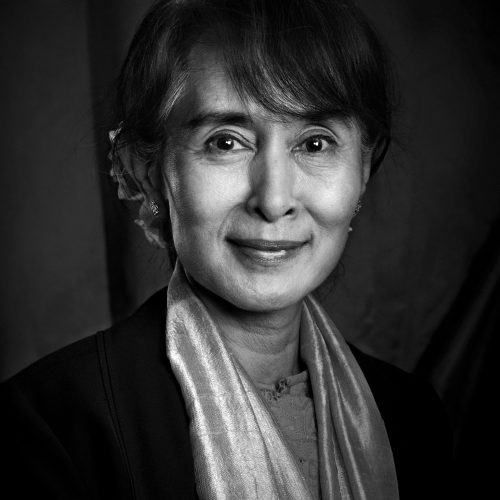

|  |
Aung San Suu Kyi
Burmese politician, diplomat, author, and a 1991 Nobel Peace Prize
Winner
|
Personal Life
Aung San Suu Kyi was born on 19 June 1945 in Rangoon (now Yangon), British
Burma. According to Peter Popham, she was born in a small village outside
Rangoon called Hmway Saung. Her father, Aung San, allied with the Japanese
during World War II. Aung San founded the modern Burmese army and
negotiated Burma's independence from the United Kingdom in 1947; he was
assassinated by his rivals in the same year. She is a niece of Thakin Than
Tun who was the husband of Khin Khin Gyi, the elder sister of her mother
Khin Kyi.She grew up with her mother, Khin Kyi, and two brothers, Aung San
Lin and Aung San Oo, in Rangoon. Aung San Lin died at the age of eight
when he drowned in an ornamental lake on the grounds of the house.Her
elder brother emigrated to San Diego, California, becoming a United States
citizen.After Aung San Lin's death, the family moved to a house by Inya
Lake where Aung San Suu Kyi met people of various backgrounds, political
views, and religions. She was educated in Methodist English High School
(now Basic Education High School No. 1 Dagon) for much of her childhood in
Burma, where she was noted as having a talent for learning languages.She
speaks four languages: Burmese, English, French, and Japanese. She is a
Theravada Buddhist.
Personal Details
| Born |
19 June 1945, Rangoon, British Burma |
| Political party |
National League for Democracy |
| Spouse |
Michael Aris (1972; died 1999) |
Carriers
| Date |
Roles |
| 2016-2021 |
State counsellor of Myanmar |
| 2016-2021 |
Minister of foreign affairs |
| 2016-2021 |
Minister of the President's office |
| 2011-present |
President of the National League for Democracy |
| 1988-2011 |
General secretary of the National League for Democracy |
| 2012-2016 |
Burmese House of Representatives |
Books
Contact Me